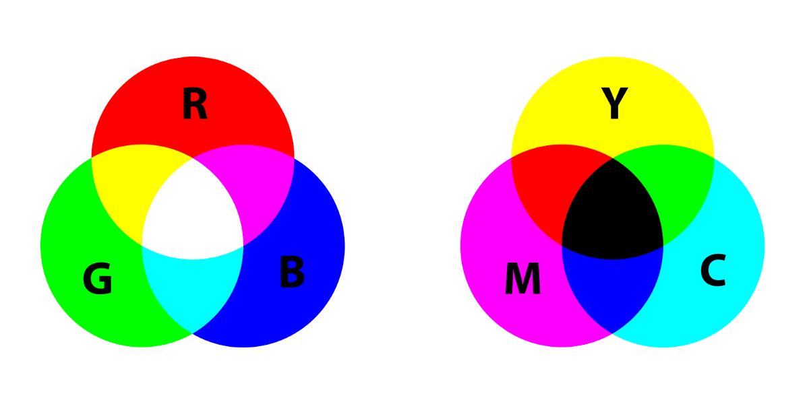

RGB staat voor de kleuren rood, groen en blauw. Dit is het kleurmodel dat je vooral tegenkomt op beeldschermen. Bijvoorbeeld een computerscherm of een televisie. Het CMYK-kleurensysteem wordt gebruikt bij het uitprinten. Dit wordt gedaan, omdat de RGB kleuren niet mengen op een witte ondergrond, zoals wit papier.
